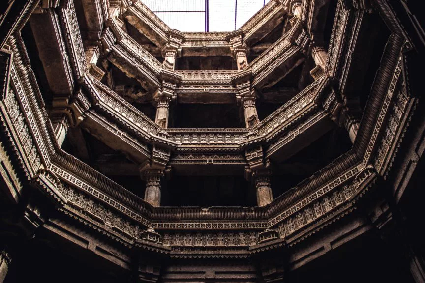

PLACES TO VISIT IN GUJARAT
Gujarat offers all that a national or international tourist looks for – a wide range of diverse destinations and attractions. In addition, strong logistic connectivity, excellent communication facilities, adequate health infrastructure, round-the-clock power supply even in the remotest area, safety and
security, and above all the hospitable nature of the people make Gujarat a prime destination in India. The varied landscape of Gujarat is a complete
package in itself. Here, the White Desert of Kutch coexists with a long and beautiful coastline. The archaeological monuments from different eras go
as far back as Harappan time in Dholavira and Lothal. Gujarat has ancient caves, stupas, monasteries, temples, and monuments that exhibit the Indo-Saracenic architectural style which blends elements of Islamic and Hindu architecture.
People who come to Gujarat get bonded with its charisma because life itself is a celebration here. Welcome to Gujarat, the land of heritage, wildlife, fun, frolic, and food.

VADODARA:
Vadodara, Gujarat’s third-largest city, is situated on the banks of the river Vishwamitri and is famous as the cultural capital of Gujarat as well as
a center of educational activities. Vadodara was originally known as Vadapradaka, which means a village amidst Banyan trees. Archaeological
findings show that there was human habitation here from prehistoric times.
Vadodara passed through the hands of the Imperial Guptas, Chalukyas, Rashtrakutas, Solankis, Sultans of Delhi, the Mughals, and finally the Marathas. Present-day Vadodara owes its grandeur to Maharaja Sayajirao
Gaekwad III, a great ruler, a socio-economic reformer, a patron of arts, architecture, and music.
Things to do in gujrat Statue of unity – (photo credit : Sarangib_pixabay)
AHMEDABAD
Ahmedabad, also known as Amdavad, was named after Sultan Ahmed Shah, who founded the city in 1411. It is one of the major cities of Gujarat.
It served as the capital of Gujarat from 1960 to 1970. Ahmedabad has a strong association with India’s struggle for independence. Mahatma Gandhi
lived in Ahmedabad for several years and it was from here that he started the Dandi March, also known as the Salt March, an act of nonviolent resistance and civil disobedience against British rule in India.
historic places in Gujrat The iconic Ahmedabad Mosque, one of the oldest Islamic structure in Gujrat – (photo credit : pexels-sonika-agarwal)
DWARKA
Located at the western tip of the Saurashtra peninsula, Dwarka has great importance both as one of the four principal holy places (char Dham), as well as one of the seven holy towns (sapta puris) to visit. For this reason, millions of pilgrims and historical scholars have come here over the centuries. Lord Krishna is said to have come to Dwarka from Mathura to build his new kingdom where he later spent a significant part of his life.
Fishing in gujrat Boats are ready to sail before the fishing seasons open after monsoon – (photo credit : sarangib_pixabay)
JUNAGADH
Junagadh is a hidden gem tucked away in Gujarat at the foot of the Girnar hills. Formerly a princely state, Junagadh when translated means “old fort“. Located at about 355 kilometers southwest of the capital city of Gujarat, Junagadh has a rich past with Nawabs, belonging to the Pashtun clan in Afghanistan. The architectural developments in the city reflect the multicultural past it has had. Famous for its Kesari mangoes, Junagarh is a quaint place away from mainstream tourist sectors and best for a quick getaway from the hectic city life.
Hidden gems of Gujrat The indo islamic architectural of Mahabat Maqbara is a eye- catching – photo credit : HimanshuRanpara_pixabay)
JAMNAGAR
Jamnagar is a beautiful destination in Gujarat that is an ocean lover’s paradise. Established as a prominent princely state around the 16th century by the Jadeja, Jamnagar is resplendent with Hindu Mythology. It is said that Lord Krishna resided here and the locals take pride in their Yadava clan lineage because of this. Boasting the first Marine sanctuary in India and the largest oil refinery in the world, this district is iconic in its past and present. A booming economy and a pleasure to tourists, Jamnagar has the best of both worlds.
best places to witness flamingo The Khijadiya Bird Sanctuary is the place for bird watching – (photo credit : sarangib_pixabay)